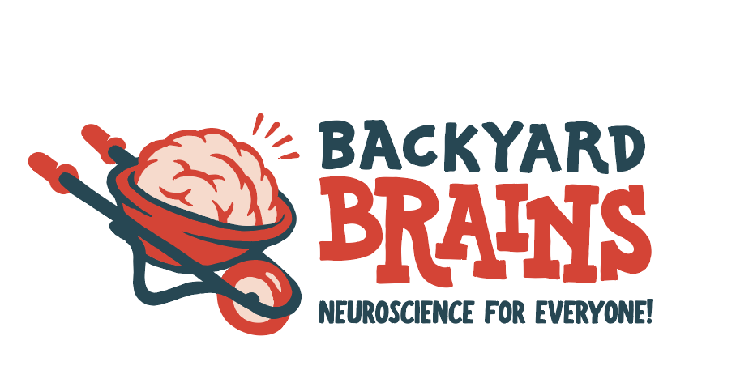
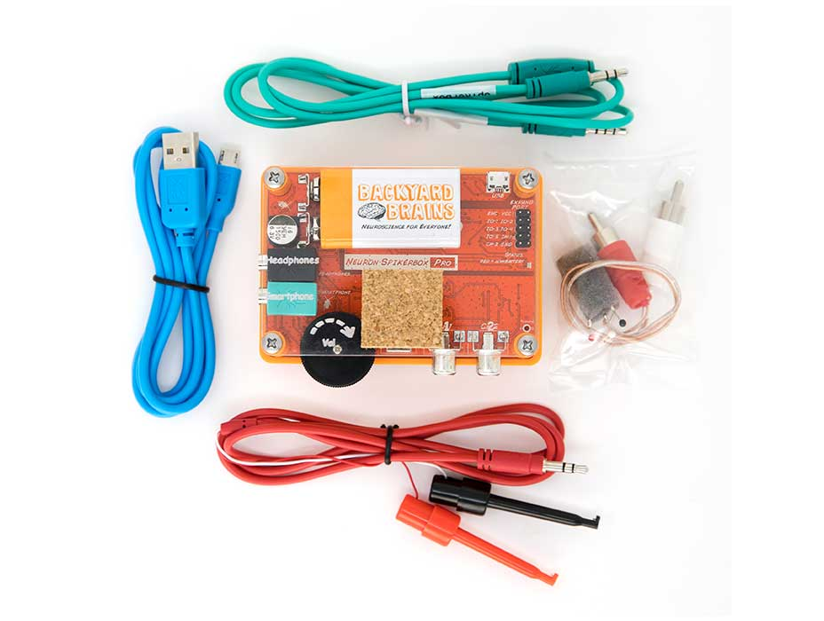

UX DESIGN/RESEARCH
SI 405/487: USER EXPERIENCE FINAL PROJECT - SCHOOL OF INFORMATION
FALL 2019 - winter 2020 (in progress) | ANN ARBOR, MI
OVERVIEW
The goal of this course is to provide students with real world experience in working on a challenging UX project with a client. This project requires our team to apply our UX skills and knowledge to conduct UX research, analyze requirements, design, prototype, and evaluate.
Our team has been matched to a local Ann Arbor company known as Backyard Brains, which has a mission statement to make learning neuroscience fun, accessible, and affordable for teachers of students of all levels.
PROBLEM STATEMENT
Teachers that use Backyard Brains products are lacking a reliable system of support and guidance following their purchase of the products.
METHODOLOGY
- CLIENT RESEARCH & GATHERING REQUIREMENTS
- RESEARCH QUESTION & METHODS
- TARGET USERS & RECRUITMENT
- STAKEHOLDER ANALYSIS
- COMPETITIVE ANALYSIS
- FUTURE STEPS & METHODOLOGY
CLIENT RESEARCH & GATHERING REQUIREMENTS
Backyard Brains Products/Services:
Backyard Brains’ products can best be described as educational neuroscience tools. These tools mimic real equipment used by neuroscientists in the field and allow anyone to be able to study the brain in a hands-on fashion. Backyard Brains’ products are experiential and teach users about how the brain interacts with senses, memories, and emotions.

Requirements Gathering:
After meeting with Backyard Brains staff on a biweekly basis thus far, we have a better understanding of what the staff’s requirements are:
- We must understand customer motivations and reasons for buying such products, as well as what exactly customers are doing with the products once they purchase them.
- We must understand what teachers need and want, in terms of support, after buying Backyard Brains products by analyzing user feedback received from a survey that was sent to existing users.
- We must investigate and understand what types of customers are not buying products and why.
Project Goals:
Specific features on the website to be implemented to improve the learning and onboarding experience for customers:
- The general UX design/user flow of the existing page is poorly designed.
- We plan to provide users with easier methods to look for and view experiments and tutorials pertaining to Backyard Brains products.
- We also plan to create a support feature, which will be a community forum page, where users can chat and interact with other users, incorporating peer-to-peer assistance.
- A future goal would be to make Backyard Brains’ software, which is used to record and interpret data when using the products, available on the teacher portal to users so Backyard Brains can have access and the ability to manipulate/analyze user data.
RESEARCH QUESTION & METHODS
Research Question: How can Backyard Brains provide better, more accessible online support for their users in order to improve their experience with the BYB suite of products?
Research Methods:
We will perform surveys and interviews, which will allow us to obtain both qualitative and quantitative data that can help inform our design in the future. Surveys will provide more of the quantitative data and the interviews will provide most of the qualitative data. Using a survey will allow us to reach a higher volume of users and gain insight into their attitudes, behaviors, and characteristics. Interviews will be done on a smaller amount of users, but will provide a deeper understanding of the users’ behavior and motivations.
Both methods will offer insight into the users’ mindsets and tell us, from their point of view, what they need and desire from the proposed teacher portal. Our clients have given us some background into their user base, however it is important to hear directly from the customers.
TARGET USERS & RECRUITMENT
Target Users:
Our target user is a middle to high school teacher, likely employed at a more affluent school. The teachers are looking for ways to engage their students in the topics of neuroscience, and give them hands-on application opportunities that go beyond simply reading about neuroscience concepts in a textbook. However, what is especially important to take into consideration about our target user is their level of expertise and domain knowledge surrounding the subject, or lack thereof. Therefore, our user’s priority is being able to rely on a smooth support system when it comes to using the Backyard Brains products that allows them to confidently utilize the tools in their classrooms.
Recruitment:
We plan to recruit users through email. The client currently has a list of email addresses for their users, which we plan to use for recruitment and interview purposes. Via email, our goal is to send out online surveys and interviews to learn more about the current user pains, needs, and how to improve their experience. The user base for Backyard Brains is quite dedicated, and will more than likely be very enthusiastic in participating in user research, because it will ultimately benefit their classroom experience as well.
STAKEHOLDER ANALYSIS
Internal Stakeholders: The most prominent internal stakeholders for our project are the entities directly employed by the Backyard Brains organization themselves (i.e. BYB researchers/creators, graphic designers, and developers).
External Stakeholders: The main users of Backyard Brains products, teachers, and their students constitute the main external stakeholders. It is crucial for Backyard Brains to understand customers’ needs and wants when creating their products and doing customer outreach.
COMPETITIVE ANALYSIS
Before beginning our competitive analysis, we knew that this was a niche industry, and there would not be many direct competitors. However, while interactive kits for neuroscience is a niche topic, educational resources are abundant. Therefore, it was important that we defined certain qualifying metrics against which to compare the competition.
Metrics of Success for Competition:
- Interactivity: How interactive is the product? It is important for us to gauge the extent to which a competitor facilitates hands-on engagement for the user, as this is one of the main selling points for the Backyard Brains suite of products.
- Adaptability: Can the competitor’s product be adapted or changed to best fit the needs of the user? Although the Backyard Brains products are each meant to teach a certain concept, the intent is for teachers to be able to mold them to best fit the needs of their classroom.
- Pedagogical value: At its core, Backyard Brains’ mission is to teach and impart neuroscience knowledge upon younger students. Therefore, an important metric to consider is what the learning value of a company’s product is.
- Facilitating contemporal/simultaneous collaboration: An important part of hands-on learning is the ability to collaborate and communicate in real time. Whether this is teachers collaborating with other teachers, students collaborating with other students, or a combination of the two, we want to consider the extent to which this is facilitated through the competition.
Direct Competition:
The most direct competitor is a website called Neuroscience for Kids that was developed by Dr. Eric H Chudler, the executive director of neurotechnology at the University of Washington. Chudler’s website is aimed at simplifying neuroscience concepts for kids. The online platform provides interactive animations and games to give younger students with an affinity for learning about the inner workings of the brain an opportunity to explore their interests. While operating in a similar space, it is arguably almost always better to learn by doing rather than simply watching or reading. Therefore, Backyard Brains’ interactive, physical experiments that allow students to not just observe, but take an active role in their neuroscience education, definitely has the edge over Chudler’s platform.
Indirect Competition:
The closest indirect competitor Backyard Brains has is the variety of neuroscience textbooks that explain either the same or similar concepts that are portrayed in the Backyard Brains experiment kits. The indirect competitors do not pose much of a threat to Backyard Brains since most neuroscience textbooks are tailored for college students and higher education, and thus not for kids. Ultimately, textbooks serve as indirect competition in terms of their inherent pedagogical value, but lack the interactive capabilities and the ability to serve as a facilitator of classroom collaboration.
Analogous Competition:
Analogous competitors would be Twitter, Pinterest, online teacher forums, and other online resources for teachers. Twitter allows teachers to connect with each other and receive advice and resources from these connections. Pinterest and online teacher forums also allow the sharing of resources and ideas.
Backyard Brains and the teacher platform we are developing for them are analogous to these other online tools because they all provide a community for and resources to teachers, but in different contexts. Twitter, Pinterest, and teacher forums are all social medias. Backyard Brains is a company selling neuroscience toys that wants to incorporate a teacher resource platform into their site. Both are in different domains and serve their general customers differently, but offer, or will offer, resource sharing for teachers. We can use Twitter, Pinterest, teacher forums, and other teacher-centered platforms to gain insight into customer needs, behaviors, and goals.
FUTURE STEPS & METHODOLOGY
In the coming winter semester, I am looking forward to continuing my Capstone Project and serving the needs of both our client, Backyard Brains, and their customers. There are numerous milestones to come in regards to this project, and I am excited to begin working on the actual interface and applying interactive design concepts to this project. Below is a brief layout of my team’s methodology to be completed in the coming semester. Overall, I am excited to continue to work collaboratively with my team, consistently communicate with our client, and work at the intersection of technology, data, and people.
FUTURE METHODOLOGY
- SURVEY DISTRIBUTION, INTERVIEWS, ANALYSIS - USER RESEARCH
- PERSONAS & SCENARIOS
- PAPER PROTOTYPE
- DIGITAL PROTOTYPE
- USER TESTING
- ITERATE